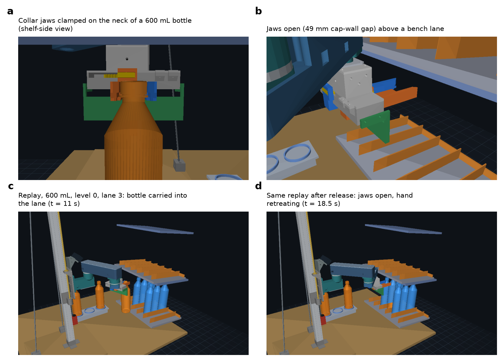
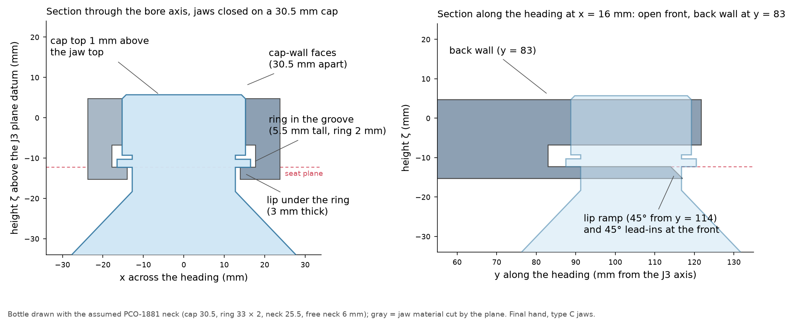
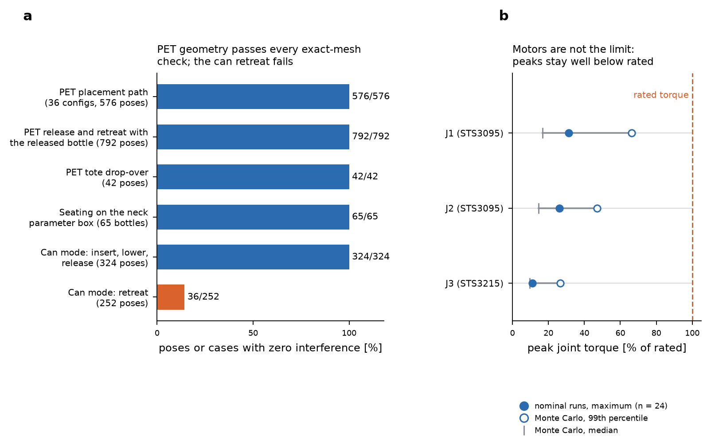
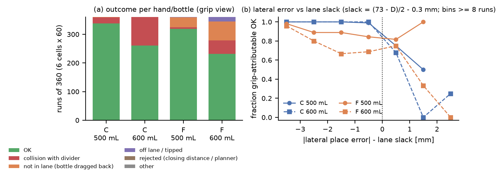
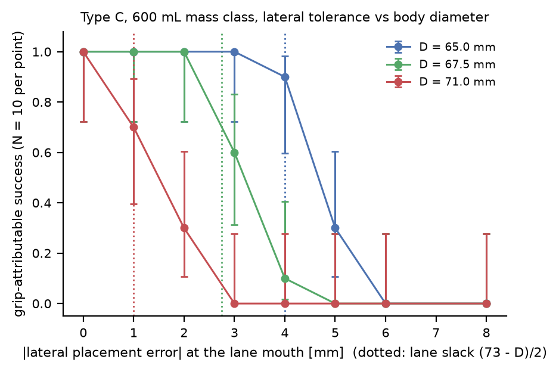
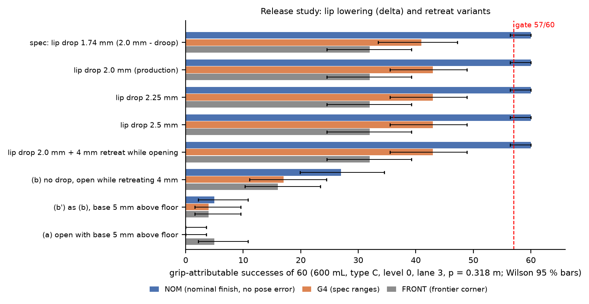

ElRobot2 S2-RC2: neck-grip hand on the S1 Z-lift SCARA for PET bottles in standard cooler racks
Design report, 2026-10-04. Status: design release candidate, not built. Everything below comes from CAD, exact-mesh boolean interference checks, closed-form and finite-element strength checks, and MuJoCo simulation. Nothing has been printed, built or tested on hardware, and the bottle-neck dimensions are assumed (PCO-1881) until Gate 0 is run on real bottles. "Tested" in this report means computed, never measured.
0. Read this first
0.1 The result in one paragraph
S2-RC2 replaces the S1 body-grip hand by two printed collar jaws that close on the cap and the neck of a PET bottle and carry it by a lip under the support ring. This is the place where the public photographs show the Telexistence robot holding bottles, and it lets the hand enter shelf pitches of 0.287 to 0.381 m, which the S1 hand (417 mm needed for a 600 mL bottle) cannot. For 500 mL and 600 mL bottles the hand, wrist and arm geometry pass every interference check I ran (576 of 576 placement poses, 792 of 792 release and retreat poses, 42 of 42 tote poses, 65 of 65 seating cases), and the simulation places a nominal bottle in 24 of 24 trials. Three things limit it: (1) the lateral accuracy at the lane mouth, because the lane leaves a bottle only (73 - D)/2 of slack per side; (2) the neck, which I have not measured; (3) the J3 wrist, whose printed S1 chain fails at a safety factor of 0.28 for a 500 mL bottle and must be replaced by a metal kit before any bottle is carried. Cans cannot be placed in the 73 mm lanes with the old hand (the retreat is blocked).
0.2 Gate table
| Gate | What it tests | Result | Evidence |
|---|---|---|---|
| G0 | Neck dimensions of real bottles (assumed PCO-1881: cap 30.5, ring 33 x 2, free neck 6 mm) | NOT RUN: needs your bottles | measurement sheet v4, four slot gauges |
| G1 | Interference, PET placement path (insert, lower, release, retreat) in the stand-in bench | PASS: 576 of 576 poses and 792 of 792 release and retreat poses (released bottle included), 0 mm3 overlap, metal J3 kit included | s2chk_place, s2chk_release; positive controls pass |
| G1 | Interference, PET tote pick (vertical drop-over) | PASS: 42 of 42 poses | s2chk_tote |
| G1 | Seating of the jaws on bottles over the neck parameter box | PASS: 129 of 129 corner cases (Hand booleans); 65 of 65 in my independent check | Hand README 5.5, s2chk_seat |
| G1 | Interference, CAN lane placement (old hand on the offset bar) | FAIL: insert, lower, release clean, but 216 of 216 retreat poses collide with the released can | s2chk_can, lift-over needs 130 mm |
| G2 | Clearances (bottle-divider, hand-ceiling, arm-plate) | PASS, thin margins: bottle-divider 2.9 mm per side, hand to ceiling plate 10.0 mm at 0.287 m | s2chk_clear |
| G3 | Strength: jaws, rail, lip | PASS, thin margin at the clamp: across-layer SF 2.95 to 3.42 at the 25 N clamp (finest mesh, 1.0 mm; 3.75 to 4.07 at 1.5 mm), 2.08 at the 1.0 N*m transport torque; lip hold SF 12.6 to 13.4 (9.7 to 9.8 for the 2.0 mm lip); rail SF 5.8 | Hand README, FE convergence table |
| G3 | Droop of the jaws under a 1.2 kg x 1.5 g load (limit 1.0 mm) | MET ONLY WITH PTFE SHIM: 1.19 mm with the printed 0.2 mm guide gaps, 0.88 mm with gaps of 0.12 mm or less | Hand README 0 item 6 |
| G3 | J3 chain | Printed S1 chain FAILS (SF 0.28 at 500 mL). Metal kit passes: CNC 7075 SF 4.5 at 600 mL, no-CNC kit SF 4.2 | Wrist README 4 |
| G4 | Placement success, Monte Carlo, specified errors (+-4 mm) | 600 mL BELOW target: type C 500 mL about 94 %, 600 mL about 72 % (grip basis) | Sim README |
| G4 | Same, with the lateral error centred to +-1.5 mm by the wrist camera | PASS in the simulation for type C: 500 mL and 600 mL 99 % (358 of 360 each; every one of the 12 cells at least 59 of 60); depends on a centring accuracy that has not been demonstrated | Sim README |
| Swing | Tilt limit of 8 degrees at 0.3 g lateral acceleration, passive (friction only) | 500 mL and 600 mL: settled tilt 0 to 5.2 degrees for friction 0.5 to 0.3 (assumed); 1 L: 7.5 to 11.3 degrees; 1.5 L and 2 L: 12.6 to 14.2 degrees, fail. A step acceleration can overshoot to twice the settled angle | Hand swing table (my reading; the Hand README verdict is stricter than its own table) |
| Hardware | Any measurement on a real part | NONE |
0.3 Deviations from the master specification and from earlier statements
- Flat stepped faces instead of circular half-bores. Circular bores stop at 2.2 / 4.3 / 6.4 mm per jaw for caps of 29.5 / 30.5 / 32.0 mm and cannot clamp the cap-diameter range (Hand, accepted).
- Seat plane and carriage rule. z_c = z_ring_underside + 162.3 mm (specification: +154.3). The loaded seat plane sits 0.5 to 0.8 mm below the drawn plane because of the printed guide gaps.
- Groove height 5.5 mm (specification 4.5; 5.5 passes 121 of 129 neck corners for the 2 mm release lowering and 113 of 129 for closing at the 2.2 mm window, instead of 77 and 73). Back wall at y = 83 mm (clearance 4.0 mm, specification 1.0).
- Jaw bars are 22 to 23 mm wide, not 5 to 6 mm plates (a 5 mm plate would deflect 10 to 40 mm at 25 N). The guide is a printed front rail plus four new inserts in the base end faces (drill templates or a reprinted base).
- q3 convention. q3 = 0 when the hand heading is parallel to the forearm. The Sim's first values were offset by 90 degrees; the lane and tote q3 values in this report use the heading convention.
- Release sequence. The jaws are lowered by 2.0 mm first (the ring lifts off the lip), then opened, then the hand retreats. Opening at height succeeds in 0 of 60 trials and opening while retreating in at most 27 of 60.
- J3. The printed S1 pin, flange and horn plate are replaced by a metal kit. All J3 numbers from the Sim's first run (moment 3.2 to 3.9 Nm) were a controller error and are void; the corrected carry moment is 0.79 Nm, with a 2.03 N*m transient at placement lasting 17 integration steps.
- Closing-distance policy. The accepted cap window (29.2 to 32.5 mm) and all success criteria are unchanged, but the re-grasp schedule was extended after the first G4 run (reading ambiguity near 33 mm); both schedules are reported by the Sim.
- Can mode is limited to tote picks (section 5.3).
- Rack bench. The delegated Rack track did not complete (an automated safety filter halted it; I did not retry it by other means), so no printable rack mock-up exists; the stand-in bench constants of the simulation are in Appendix A.
0.4 What I need from you
- Are the 20 6701-2RS bearings you ordered chrome steel or stainless? (Chrome: 530 N, payload limit 1.46 kg; stainless: 260 N, 0.72 kg.)
- Do you have access to a CNC service or a workshop with a drill press? That decides between the CNC 7075 kit (1 to 2 weeks to Mexico) and the hand-made no-CNC kit (local stock, about one workshop hour).
- Re-run or skip the printable lane mock-up that the stopped Rack track was to produce? Gate 0 does not need it; test H7 (lane placement) does, but it can also be built from Appendix A in plywood or acrylic.
1. What changed from S1, and what the Japanese evidence does and does not say
The S1 hand closes around the body of the bottle and stands 140 mm above it, so a 600 mL bottle needs a shelf pitch of 417 mm (CAD, Telexistence note). The standard racks found in the desk research have 287 to 381 mm. Public photographs of the Telexistence hand (four photographs, 2021 to 2022) show a horizontal arm, a bottle hanging below flat vertical plates that sit directly around the cap and neck, and the arm entering the shelf from the rear. I read this as a neck grip. What the photographs do not show: whether the plates hook under the support ring, the clamp force, the pad material, how cans are held, and how a bottle is released. The lip under the ring, the groove, the stepped faces, the 49 mm drop-over opening and the release sequence are my own design, not theirs, and the plate sizes in my note are estimates with about 25 % uncertainty.

Figure 1. Minimum shelf pitch by container for a claw above the bottle (S1) and a claw at the neck (S2), against the four rack pitches.
| container | height (mm) | S1 body claw needs (mm) | S2 neck claw needs (mm) | fits 287 / 318 / 334 / 381 racks (neck claw) |
|---|---|---|---|---|
| 500 mL | 210 | 390 | 250 | all four |
| 600 mL | 237 | 417 | 277 | all four |
| 1 L | 290 | 470 | 330 | 334 and 381 only |
| 1.5 L | 311 | 491 | 351 | 381 only |
| 2 L | 320 | 500 | 360 | 381 only |
The body claw fits none of the racks. The pitch rule is height + 5 mm insertion lift + 30 mm shelf structure (assumed) + 5 mm margin + hand height above the cap (0 for the neck hand). Bottles of 1 L and larger do not fit the 73 mm lanes in any case (they go to the tote or to wide lanes).
2. Concept and key parameters
S2-RC2 keeps the S1 Z-lift SCARA (J1 and J2: STS3095 C002; J3 and gripper: STS3215 C018; links 200 + 200 mm; reach 170 to 385 mm; column 4040 with T8x4 screw and a NEMA17 with 24 V brake; carriage 0.37 to 1.06 m) and replaces the hand. The S1 rack-and-pinion gripper body is rotated by 90 degrees so that the jaws close perpendicular to the hand heading and carry two printed collar jaws. The bore (cap axis) is 104 mm ahead of the J3 axis.
| item | value |
|---|---|
| Frames | world x lateral, y toward the shelf, z up; J1 axis at (0, 0); q3 = 0 when the hand heading is parallel to the forearm |
| Carriage rule | z_c = z_ring_underside + 162.3 mm (seat plane zeta = -12.3 mm) |
| Jaw faces at the closed hard stop | lip 26.5, cap wall 29.0, groove 34.0 mm apart; groove 5.5 mm tall; lip 3.0 mm thick (lip2 option: 2.0 mm) |
| Open (approach, drop-over, release) | 46.5 / 49.0 / 54.0 mm; jaw top 1 mm below the cap top; nothing of the hand above the cap |
| Grip servo | register 238 (0.70 Nm, 24.8 N per jaw) to grasp; 340 (1.0 Nm) transport for 1 L; never above 400; closed hard stop 1925.8 ticks, open 2469.0 (2048 zero) |
| Hand mass | 398.4 g (type C, closed), centre of mass (2.72, 10.78, zeta 12.86) mm in the hand frame; 0.44 kg is used for the J3 design |
| Supported bottles | 500 mL and 600 mL (verified); 1 L conditional (tote or wide lane, pad jaws, chrome bearings); 1.5 L and 2 L not supported |
| Lanes | 76 mm pitch (73 mm clear, 75.4 mm between divider noses), 250 mm long, 6 degree slope, entrance datum y = 330 mm |
| Shelf pitch | 0.287, 0.318 (design driving) and 0.381 m |

Figure 2. Viewer renders of the final Hand-track meshes with the metal J3 kit. (a) jaws closed on a nominal 600 mL neck; (b) jaws open above a bench lane; (c, d) frames of a logged MuJoCo episode.
3. The hand
Two jaws (type C collar) slide on the S1 racks; each carries three stepped planar faces: the cap-wall face, a groove that clears the ring, and the lip that goes under the ring and carries the weight. The Hand track also built a type F fork (same jaws without the cap wall); it hangs the bottle on the ring (a pendulum swing of 5.6 degrees at 0.05 g in the simulation), its closing check passes 129 / 97 / 81 of 129 neck corners at the three windows against 129 / 121 / 113 for type C, and it needs a 2.5 mm lip drop (so a free neck of at least 4.5 mm) to avoid dragging the bottle out of the lane; it is kept only for comparison.

Figure 3. Jaw sections through the bore axis (left) and along the heading (right) with the assumed nominal neck.
Print. Type C jaws 37.1 g and 40.4 g (about 1.4 h each), guide rail 44.4 g (1.6 h), two drill templates (0.4 h each) or a reprinted base (2.4 h, 72.3 g); PETG, no supports, as exported. The Gate-0 slot gauges (about 25 to 40 min each) and clip sticks (0.8 h) are printed first (section 6).
Strength. Voxel finite elements (PETG, E = 1200 MPa; clamp path, across-layer stress, contact elements excluded). The clamp at 25 N per jaw gives an across-layer peak of 2.46 / 2.80 / 2.93 MPa for jaw A at mesh sizes of 1.5 / 1.25 / 1.0 mm and 2.67 / 3.39 MPa for jaw B at 1.5 / 1.0 mm, that is safety factors of 4.07 / 3.58 / 3.42 (A) and 3.75 / 2.95 (B). The peak sits at the sharp inner corner of the tab window and rises as the mesh is refined, so the finest-mesh value is the one to use (the 0.4 mm window clearance limits any fillet to a radius of 0.6 to 0.8 mm; inspect the corner after the first clamp cycles). At 1.0 Nm (35.4 N per jaw) the lowest safety factor is 2.08, at 1.177 Nm (41.7 N) 1.77, and a stall at 100 N per jaw raises the peak to 13.6 MPa (jaw B), which is 1.36 times the 10 MPa allowable for repeated loads (SF 0.74 on that basis) and leaves SF 1.29 only against the 17.5 MPa single-event allowable (jaw A: 11.7 MPa, SF 1.50). Sustained holds are therefore limited to 1.0 Nm, the clamp to 0.70 Nm, a stall is a one-time event at most (never repeated), and the EEPROM torque limit must be set to 400. The 2.0 mm lip jaws give the same clamp numbers. The lip carries the bottle: a hold at 8.8 N per jaw gives SF 12.6 to 13.4 in plane (3.0 mm lip, 1.5 mm mesh; 9.7 to 9.8 for the 2.0 mm lip at 1.0 mm), and a beam check of the 3.0 mm lip gives SF 3.8 for a 2 L bottle at 1.5 g (1.7 for the 2.0 mm lip). The guide rail has SF 5.8 under both jaws at 26 N. The rack-tab root (S1 load path, unchanged) has SF 2.97 at 0.70 Nm and 2.08 at 1.0 Nm.
Droop. Elastic droop at the bore under 1.2 kg x 1.5 g is 0.40 mm, but the printed 0.2 mm guide gaps close under the nose-heavy jaw and bring it to 1.19 mm (limit 1.0 mm). With 0.08 mm PTFE tape on the rail top and bar tops the gaps are 0.12 mm or less and the droop is 0.88 / 0.83 mm. This must be feeler-checked on every hand. It also limits the mass the hand may carry: 1.37 kg with the PTFE shims and 1.01 kg with the printed 0.2 mm gaps (3.0 kg elastic). A 1 L bottle (1.07 kg) passes only with the shims; 1.5 L (1.6 kg) and 2 L (2.13 kg) do not.
Friction and hold. Clamp force on caps below 30.3 mm is spring-limited (F = 18.9 N/mm x (cap OD - 29.0)), so the servo ticks cannot infer the cap diameter below 30.3 mm; the planner treats a stall at the hard stop with a bottle present as a valid grasp. With PETG faces (friction 0.3 to 0.5, assumed) friction alone holds 500 mL at SF 2.6 to 4.3 and 600 mL at SF 2.0 to 3.3; 1 L needs the TPU pad jaws and 1.0 N*m; 1.5 L and 2 L are carried by the lip. Pull-out along the heading while carrying is 14 to 30 N for 500 and 600 mL (assumed friction).
Swing. Flat faces give no passive restoring torque about the closing axis: free swing is -14 to -34 and +7 to +40 degrees, and the only restoring effect is friction at the jaw faces. Settled tilt under a constant 0.3 g acceleration along the heading, at 0.70 Nm: 500 mL 0 degrees; 600 mL 0 degrees (PETG friction 0.5) to 5.2 degrees (0.3); 1 L 7.5 degrees (0.5) to 11.3 degrees (0.3), 0 degrees with 1 mm TPU pads (0.6) at 1.0 Nm; 1.5 L 12.6 to 14.2 degrees at any face. The acceleration for 8 degrees of tilt (PETG 0.5, 0.70 N*m) is 0.64 g for 500 mL, 0.49 g for 600 mL, 0.31 g for 1 L, 0.22 g for 1.5 L. A step acceleration can overshoot to twice the settled angle, and the friction values are assumed, so the planner limits the heading acceleration at the hand to 0.3 g and the pad-pocket jaws are recommended for 1 L. In the simulation (friction 0.45, 0.65 kg) the swing stays below 0.1 degree at 0.2 g and reaches 5.5 degrees at 0.3 g and 14 degrees at 0.4 g along the heading.
Release geometry. The lip top has a 45 degree ramp from 10 mm ahead of the bore axis; the release lowers the hand by 2.0 mm so that the ring leaves the lip, then opens to 49.0 mm. The rule for the free neck below the ring (216 bottle corners, exact booleans): lowering by D mm needs a free neck of at least lip thickness + D - 1.0 mm, that is 4.0 mm for the 3.0 mm lip and 3.0 mm for the 2.0 mm lip (worst corner), or 3.25 and 2.25 mm for a typical 600 mL bottle with a 71 mm body.
4. The wrist and J3
The J3 interface (46 x 46 mm flange, four M3 on 36 x 36 mm, plane zeta 62.5 mm) is unchanged, so the hand can be fitted to any of the J3 chains below.
| J3 chain | Weakest check, 500 mL / 600 mL | Payload limit at SF 2 | Use |
|---|---|---|---|
| Printed S1 chain (pin, flange, horn plate) | SF 0.28 / 0.22 (central M3 tie in its printed pilot), key pockets 0.45 / 0.36 | none | dry fit and no-payload motion only, register 130 (0.38 N*m) |
| CNC 7075-T6 kit | governing: chrome bearing SF 5.6 / 4.5 | 1.46 kg (bearings), pin alone 1.7 kg | permanent hand; register 200 (0.59 N*m) |
| CNC 6061-T6 kit | pin SF 3.95 / 3.16 | 1.0 kg | acceptable for 500 and 600 mL |
| No-CNC kit (12 mm steel rod, 3 mm Al plates, M2.5 screws, dowels, Loctite 638) | flange plate SF 5.2 / 4.2 | 1.38 kg | first build if the CNC parts take two weeks |
The moment path in all three metal options is pin -> two 6701-2RS bearings -> housing, so the servo carries torque only. Bearing material matters: chrome steel (C0r 530 N) gives a payload limit of 1.46 kg; stainless (260 N) gives 0.72 kg and rules out 1 L. The moment at SF 2 for the weakest element is 3.71 Nm (chrome bearings), 3.39 Nm (no-CNC rod contact) and 2.5 Nm (6061 pin); the design moment for a 600 mL bottle is 1.56 Nm and the corrected simulation shows 0.79 Nm while carrying and a 2.03 Nm transient lasting 17 integration steps. Not assessed: the thread of the horn-plate screws in the plastic horn of the STS3215, and the output-shaft rating of that servo (none published).
The torque limits of the J3 servo are register 200 (0.59 Nm) with a metal kit and 130 (0.38 Nm) with the printed chain; the torque needed to hold the hand orientation against a lateral 0.3 g is 0.17 Nm (500 mL), 0.21 Nm (600 mL) and 0.34 N*m (1 L).
Can mode. The old hand moves onto a printed offset bar (69.6 g, R_can 78.0 / 83.3 mm, p_min 275.2 mm for the 473 mL can at T = 30 mm). The mode switch takes four M3 screws. Lane placement with this hand is not validated (section 5.3).
5. Verification
Every number below has a script and a table in the file index (section 8). Four independent layers were used: the Hand track's own boolean checks, my independent exact-mesh audit (a different code path from the Hand's), the Wrist track's closed-form checks, and the Sim track's MuJoCo Monte Carlo. All booleans use manifold3d on the exported meshes with an overlap criterion of 1 mm3, and every audit run starts with positive controls (a shifted copy of a part must be detected, a far copy must not).
5.1 Hand track (geometry and mass)
- Hard stops measured on the meshes: closed at rack travel s = -2.25 mm, open at +43.5 mm; controls detect 7.8 mm3 and 22.9 mm3 beyond them.
- Assembled frame: 15 meshes x 2 jaw types x 4 poses, maximum pairwise overlap 0.0 mm3 over 440 pair-poses; six positive controls detected (17.8 to 1693 mm3).
- Bottle fit over the neck parameter box (cap 29.5 to 32.0, ring OD 32 to 34, ring thickness 1.5 to 3.0, neck 24.5 to 26.5, free neck 3 to 10, shoulder 35 to 45 mm, 71 mm body): seated 129 of 129; heading approach 129 / 129 / 129 at windows of 0.2 / 1.2 / 2.2 mm; vertical drop-over 129 of 129; closing 129 / 121 / 113; release by lowering 1 / 2 / 3 mm: 129 / 121 / 73. The failures are the corner with cap 29.5, neck 26.5, free neck 3.0 and a short shoulder, which the free-neck rule of section 3 quantifies.
- Gate-0 slot gauges: 49 boolean cases as expected (nominal bottles pass, tolerance extremes pass, controls fail).
- Type F closing check: 129 / 97 / 81 of 129 corners reach the hard stop untouched at the 0.2 / 1.2 / 2.2 mm windows; every failure has a free neck of 3.0 mm, and all 65 corners with a free neck of at least 6 mm pass. The 2.0 mm lip jaws were analysed at the 1.0 mm mesh (lip hold SF 9.7 to 9.8, clamp numbers identical to the baseline jaws).
- Clamp force against cap diameter (0.70 N*m): 9.4 N at 29.5 mm, 18.9 N at 30.0 mm and 24.8 N (servo limit) from 30.5 mm; below 30.3 mm the force is spring-limited. Maximum bottle mass at SF 2: friction only 0.49 / 0.74 / 0.85 kg for face friction 0.3 / 0.5 / 0.6, lip beam 4.05 kg (3.0 mm lip) and 1.80 kg (2.0 mm lip), droop 1.37 kg with the shims and 1.01 kg without.
5.2 Independent exact-mesh audit by the lead (PET)
The moving assembly is the S1 arm and Z-module carriage parts, the metal J3 kit, the final Hand-track meshes (type C, jaws at the gap of the phase) and the carried bottle. The environment is the stand-in bench (lane floor with 6 degree slope, knife-edge dividers, ceiling plate, lane stop, neighbour bottles in the two mouth-side slots of every other lane, upper level) and the single-row tote.
| check | cases | result |
|---|---|---|
| Placement path: insert (7 steps, bottle carried), lower 2 mm, release with the jaws open to the commanded 49.0 mm gap (a first run at 54.0 mm gave the identical result), retreat (7 steps, lifted 12 mm) | lanes 1, 3, 5 x levels 0, 1 x pitches 0.287 / 0.318 / 0.381 m x 500 mL, 600 mL = 36 configurations, 576 poses | 576 of 576 pass, maximum overlap 0.0 mm3 for arm, hand and bottle against bench and neighbours; carriage z_c 457 to 885 mm (inside the 370 to 1060 mm stroke) |
| Release and retreat with the released bottle as an obstacle: bottle touching the lane floor, hand at the seat height, then lowered by the 2.0 mm lip drop, jaws opened to 49.0 mm, horizontal retreat to y = 288 mm in 8 steps (flat, and lifted 12 mm) | the same 36 configurations x 2 variants x 11 poses = 792 poses | 792 of 792 pass: arm and hand against bench, neighbours and the released bottle 0.0 mm3 (positive control: hand 0.3 mm above the seat gives 8.7 mm3); carriage z_c 452 to 872 mm; the lifted retreat leaves 14.2 mm between hand and ceiling at 0.287 m (600 mL) |
| Tote pick, vertical drop-over | 3 pockets x 2 SKUs x 7 phases | 42 of 42 pass, 0.0 mm3 |
| Seating on the neck parameter box | 65 bottles (64 corners + nominal) | 65 of 65: jaws closed on the cap with 0.0 mm3 overlap; lowering the bottle by 0.3 mm produces 2.9 to 14.5 mm3 overlap with the lip in every case (the ring rests on the lip) |
Clearances along the insertion and lowering paths (minimum surface distance, sampled at 0.8 mm, so each value is accurate to about 1 mm; 72 sampled poses; a dash means that surface is not near the path at that pitch):
| clearance (mm) | required | 0.287 m | 0.318 m | 0.381 m |
|---|---|---|---|---|
| hand base and guide rail front to the ceiling front plane y = 313 mm | 15 | 21.7 | 21.7 | 21.7 |
| hand (jaws, plates) to the ceiling plate of its own level | 5 | 10.0 | 40.8 | - |
| carried bottle (cap) to the ceiling plate | 5 | 9.9 | 41.0 | - |
| hand to the lane floor of the level above | 24.3 | 30.1 | - | |
| arm (L2, J3 stack) to the lane floor of the level above | 20.2 | 18.6 | 19.4 | |
| bottle body to the divider noses and bodies | 2.9 | 2.9 | 2.9 | |
| bottle base to the lane floor | 3.4 | 3.4 | 3.4 | |
| carried bottle to the neighbour bottles | 8.5 | 8.5 | 8.5 | |
| hand to the neighbour bottles | 35.8 | 35.8 | 35.8 |
The thin margins are the bottle against the divider noses (2.9 mm per side measured, 2.75 mm geometrically, for a 67.5 mm bottle; a 71 mm bottle would have 1.0 mm) and the hand and cap against the ceiling at the tightest pitch (10.0 and 9.9 mm). The first is the lateral accuracy requirement of section 5.5; the second is why 0.287 m works but leaves no room for a taller hand or a wrist camera mounted above the jaws. During the retreat with a 12 mm lift the hand-ceiling clearance at 0.287 m is 14.2 mm (600 mL), so the insertion pose remains the governing case.

Figure 4. (a) Poses or cases with zero interference in the exact-mesh audits; the can retreat is the only failure. (b) Peak joint torque as a fraction of the rated torque: nominal runs (24) and the 1,150 grip-successful Monte Carlo episodes of 1,440 in the G4 core; larger values occur only when the arm pushes a bottle into a divider.
5.3 Can mode (old hand on the offset bar) fails in the lane
The Wrist track supplied exact meshes of the bar, the static hand and the two finger sliders (closing axis along the heading) and the placement frame. I checked 3 cans (355 mL, 473 mL, 355 mL slim) x lanes 1, 3, 5 x levels 0, 1 x pitches 0.287 and 0.318 m = 36 configurations of 16 poses. Insert 252 of 252, lower 36 of 36 and release 36 of 36 are clean; of 252 retreat poses only the first (the release pose) is clean and 216 of 216 later poses collide: the front finger (closing axis = heading) is blocked by the released can (29 to 48 cm3). A lift-over needs 130 mm of lift; the hand reaches the tunnel ceiling after 20 mm (473 mL can) and 50 mm (355 mL can) at 0.287 m and after 50 and 80 mm at 0.318 m, so no lift-over exists. Only the 0.381 m pitch with the 355 mL can has a window (130 to 140 mm). A J3 rotation cannot help (the finger plates are 52 mm wide in a 73 mm lane). Consequence: cans are out of scope in the lanes; the bar and the mode switch are valid for tote picks and geometry only. What could remove it: jaws that hold a can at its rim or seam on the same body and rail (not designed), or a lane that opens at the front.
5.4 Wrist track (J3, bar, reach)
- J3 chain: closed-form and beam checks for the printed chain and three metal kits at 500 mL to 2 L with chrome and stainless bearings (section 4). Moment at SF 2 per element is in the moment table; the corrected simulation moments are far below the weakest metal-kit element.
- Reach: with the new datum (entrance y = 330 mm) every lane and tote pocket used is inside the annulus 170 to 385 mm for q2 > 0; a straight horizontal approach to the tote reaches only 26 mm at pocket y = 0 and 58.5 mm at pocket y = 100, so tote picks are vertical drop-overs.
- Required q3 (heading convention) at the bore for lane 1 / 3 / 5: -92.9 to -71.2 / -62.6 to -49.3 / -13.8 to -10.8 degrees depending on the insertion depth; tote pockets y = 0 / 100 / 200 / 300: -60.7 / -29.6 / 0.0 / +30.5 degrees.
- Hand-body and arm G1 checks (all q3, J1 pedestal, clamp, column, rail, tunnel ceiling) have positive controls and zero overlap; the stand-in bench is covered by my audit above.
5.5 Simulation (MuJoCo, Sim track)
Model. Rigid-body MuJoCo model of the S1 arm and Z module with the final Hand-track meshes (exact convex decomposition of the jaw slot region, conservative hulls elsewhere), the stand-in bench of Appendix A (5 lanes of 76 mm, 6 degree slope, knife-edge dividers 35 mm tall, ceiling, 20 mm lane stop, upper level), the single-row tote and bottles with the assumed neck. Release variant Vd2.0: the rack lowers the hand until the lip has dropped by 2.0 mm (effective; the command adds the droop of the real hand, 0.26 mm for 600 mL), then the jaws open, then the hand retreats. A closing-distance check accepts a cap reading of 29.2 to 32.5 mm and re-grasps otherwise. Success is judged two ways: grip-attributable (all G4 criteria on the state before the bottle first touches the 20 mm lane stop: placed in its lane, tilt at most 8 degrees, carry swing at most 10 degrees, slip at most 3.5 mm, neighbour displacement at most 5 mm, no collision with ceiling or dividers) and strict (also still upright after it has glided to the stop). At lane friction 0.05 to 0.07 the bottle reaches the 20 mm stop at 0.35 to 0.44 m/s and a 600 mL bottle topples, whereas a 60 mm stop prevents it; this is a property of the bench, and it is the whole difference between the two columns. The hand is rigid in the model, only the mouth-slot bottle of each neighbouring lane is dynamic, and the carry accelerations are limited to the S1 joint accelerations (4 rad/s2), so the cycles run at the joint-limited value (swing 0.03 to 0.11 degrees). The Sim track's own gate is 57 of 60 draws in every cell.
Monte Carlo box G4 (60 draws per cell; cells = jaw type x bottle x level 0, 1 x lane 1, 3, 5 at pitch 0.318 m): cap 29.5 to 32.0, ring 32 to 34 x 1.5 to 3.0, neck 24.5 to 26.5, free neck 3 to 10 mm; body diameter 63.6 to 68.0 mm (500 mL) and 64.1 to 71.0 mm (600 mL); mass 0.49 to 0.54 and 0.62 to 0.68 kg; friction cap 0.32 to 0.60, lip 0.30 to 0.49, lane 0.05 to 0.15; pose errors at pick and place up to +-4 mm lateral, +-4 mm in depth and +-1.5 mm vertical. G4c is the same box with the lateral errors reduced to +-1.5 mm (wrist-camera centring).
The 360 runs of a row are 60 independent random draws, each repeated in the 6 cells (levels 0 and 1, lanes 1, 3, 5) with identical errors and parameters; the outcome of a draw is almost the same in all 6 cells, so the confidence intervals are bootstrapped over the draws and are wider than a binomial interval on 360.
| jaw | bottle | box | grip-attributable success | strict success |
|---|---|---|---|---|
| C | 500 mL | G4 (+-4 mm) | 94 % (338/360; 60 draws, 95 % CI 88-99) | 72 % |
| C | 600 mL | G4 (+-4 mm) | 72 % (261/360; 60 draws, 95 % CI 61-83) | 49 % |
| F | 500 mL | G4 (+-4 mm) | 89 % (319/360; 60 draws, 95 % CI 82-94) | 70 % |
| F | 600 mL | G4 (+-4 mm) | 64 % (232/360; 60 draws, 95 % CI 55-74) | 43 % |
| C | 500 mL | G4c (+-1.5 mm lateral) | 99 % (358/360; 60 draws, 95 % CI 98-100) | 76 % |
| C | 600 mL | G4c (+-1.5 mm lateral) | 99 % (358/360; 60 draws, 95 % CI 98-100) | 68 % |
| F | 500 mL | G4c (+-1.5 mm lateral) | 96 % (345/360; 60 draws, 95 % CI 92-99) | 72 % |
| F | 600 mL | G4c (+-1.5 mm lateral) | 85 % (306/360; 60 draws, 95 % CI 78-91) | 57 % |
| C | 500 mL | G4, pitch 0.287 m (indicative, 24 draws) | 93 % (67/72; 24 draws, 95 % CI 82-100) | 79 % |
| C | 600 mL | G4, pitch 0.287 m (indicative, 24 draws) | 74 % (53/72; 24 draws, 95 % CI 57-90) | 58 % |
Reading. At the specified errors the 500 mL bottle is close to the gate (4 of 24 cells reach 57 of 60, none under the strict criterion) and the 600 mL bottle is far below it. The cause is geometric and the same in every cell: the lane leaves (73 - D)/2 of slack per side (4.0 mm at D = 65, 2.75 mm at 67.5, 1.0 mm at 71 mm), and the dominant failure is the bottle body striking a divider nose after a lateral miss (collision 173 and not-in-lane 101 of 1440 runs). With the lateral error centred to +-1.5 mm every type C cell passes the gate (358 of 360 placements for 500 mL and 358 of 360 for 600 mL); in that box the draws whose lateral error lies inside the lane slack are placed in 700 of 702 runs. Type F (fork, no cap-wall faces) reaches 96 % (500 mL) and 85 % (600 mL): it hangs the bottle on the ring, so the lip drags the bottle out of the lane at release unless the lip drop is 2.5 mm (a diagnostic matrix with 2.5 mm gives 359 and 358 of 360), which needs a free neck of at least 4.5 mm, and it swings as a pendulum when carried (5.6 degrees at 0.05 g and 20 degrees at 0.2 g, against 0.03 degrees at 0.2 g for type C). Type C is therefore the primary hand and type F is kept only for comparison.

Figure 5. G4 Monte Carlo (360 runs per bar). Left: outcome classes. Right: grip-attributable success against |lateral place error| minus the lane slack.
Success against the lateral placement error, type C (grip-attributable, G4 box; the share is over the 6 cells, the interval over the unique draws in the bin):
| bottle | 0-1 mm | 1-2 mm | 2-3 mm | 3-4 mm |
|---|---|---|---|---|
| 500 mL | 100 % (14 draws; CI 78 to 100) | 99 % (18 draws; CI 81 to 100) | 100 % (13 draws; CI 77 to 100) | 77 % (15 draws; CI 51 to 91) |
| 600 mL | 100 % (14 draws; CI 78 to 100) | 97 % (18 draws; CI 78 to 100) | 46 % (13 draws; CI 23 to 71) | 40 % (15 draws; CI 20 to 64) |
Lateral tolerance by body diameter, type C, 600 mL class (indicative: 10 runs per point; nominal finish, other errors zero; lateral offset in mm at the lane mouth):
| D (mm) | slack (73 - D)/2 | 0 | 1 | 2 | 3 | 4 | 5 |
|---|---|---|---|---|---|---|---|
| 65.0 | 4.00 | 10/10 | 10/10 | 10/10 | 10/10 | 9/10 | 3/10 |
| 67.5 | 2.75 | 10/10 | 10/10 | 10/10 | 6/10 | 1/10 | 0/10 |
| 71.0 | 1.00 | 10/10 | 7/10 | 3/10 | 0/10 | 0/10 | 0/10 |

Figure 6. Success against the lateral offset for three body diameters; dotted lines are the lane slack (73 - D)/2.
Release (600 mL, type C, level 0, lane 3, 60 draws per cell, the same draws for every variant; NOM = nominal finish and no pose error, G4 = specification box, FRONT = frontier corner: cap 31.5 to 32 mm, ring 32 to 32.6 mm, ring thickness 2.5 to 3 mm, free neck 3 to 5 mm and pose errors of 6 / 4 / 3 mm). Lowering the hand until the lip has dropped by 2.0 mm effective and then opening works: 60 of 60 for the nominal bottle (the same for a lip drop of 1.74, 2.25 and 2.5 mm), 43 of 60 in the G4 box and 32 of 60 in the FRONT box; the shortfall in the two error boxes is collisions with the divider noses (17 and 28 of 60), not the release. Opening at height without lowering gives 0 / 0 / 5 of 60 (NOM / G4 / FRONT; the bottle is dragged out of the lane, 60 of 60 in NOM), and opening while retreating without a drop 27 / 17 / 16. A longer 4 mm retreat while opening, or a deeper drop (2.25, 2.5 mm), changes nothing for type C. The specification value of 1.74 mm effective gave 41 against 43 of 60 in the G4 box (two more drag-back failures), so 2.0 mm effective is the production setting.

Figure 7. Grip-attributable successes of 60 (600 mL, type C, level 0, lane 3, pitch 0.318 m) for each release variant.
Pick (tote, vertical drop-over). Pick-only Monte Carlo, 100 draws per row, 600 mL. Type C passes the grasp check in 96/100 draws of the G4 box and 66/100 of the frontier-corner box (FRONT, defined with the release study) with a single attempt; with the first re-grasp schedule (two 1 mm shifts) 97/100 and 91/100; with the final schedule (carriage shifts s, -s, 2s, -2s with s = 1 mm, at most four re-grasps) 100/100 and 100/100, and 86/100 in the frontier box if only two tries are allowed. The first schedule failed on cap readings of 32.7 to 34.1 mm, which are ambiguous when the hand is about 1.5 mm too high (the reading cannot tell the ring inside the cap-wall zone from the lip bar on the ring edge). The accepted window and every criterion are unchanged. The schedule was developed on the same draws on which it is scored, so these pick results are in-sample. 96 of 1440 G4 draws used at least one re-grasp, each costing about 4 s of cycle time.
Nominal runs (no error, nominal bottle). 24 of 24 grip-attributable successes and 24 of 24 strict (both jaw types, 500 and 600 mL, lanes 1, 3, 5, levels 0 and 1, pitch 0.318 m); cycle time 28.4 s median (range 21.4 to 35.4 s) for tote pick, carry and place; swing at most 0.03 degrees (type C); slip at most 0.81 mm.
J3 moments after the controller fix. The first J3 values (peak 3.88 Nm) were an artefact of a clamp command being reset and are void. Corrected, 600 mL type C, nominal cycle (1 kHz trace): carry 0.79 Nm, lift 0.89, placement transient 2.03 Nm lasting 17 integration steps above half peak (50 ms average 0.81), retreat 0.06; vertical force at J3 peaks at 19.4 N. These are below the weakest metal-kit element (2.5 to 3.7 Nm at SF 2) but the placement transient leaves only a factor of 1.2 to the 6061 pin. The single-sample placement maxima over all type C G4 draws are larger (500 mL: median 1.6, 95th percentile 3.7, maximum 20 Nm; 600 mL: 1.7, 2.8, 6.6 Nm); the Sim attributes them to 1 to 2 ms contact chatter at clamp release and lip drop in the rigid-body model rather than loads, and advises designing the wrist for the 50 ms average. Not assessed: the J3 moment in a real collision of the bottle with a divider nose; lane insertion should therefore be slow and force-limited until that is measured.
Frontier, type C (one factor at a time, nominal finish and zero pose error in the background, 6 draws per level, indicative). Placed in 6 of 6 draws over: free neck 1 to 10 mm, ring thickness 1.5 to 5 mm, cap diameter 29.5 to 32 mm, ring diameter 32 to 34 mm, neck diameter 24.5 to 26.5 mm, place error along the heading -20 to +20 mm. Failures begin outside: pick vertical error -4 to +3 mm (0 of 6 at -5 and at +4), pick error along the heading -10 to +8 mm, pick lateral error 0 to 6 mm (0 of 6 at 8), place vertical error -6 to +6 mm. Below 1.5 mm of free neck the lip bars rest on the shoulder cone (4.3 and 3.8 N at 1.0 mm) and the closing reading rises by 0.15 to 0.6 mm, but the pick still works; the geometric free-neck rule of section 3 for the full 2.0 mm release drop (4.0 mm) is therefore a design rule for tolerance-stacked cases, not a failure threshold found by the simulation. The planner must locate the ring underside to about +-3 mm.
Larger bottles (type C, indicative, G4c ranges, wide lane set of 125 mm pitch and 122 mm clear width at pitch 0.334 m for 1 L and 0.381 m for 1.5 L and 2 L, tote pockets of 90 to 115 mm; not the supported 73 mm lanes). 1 L: pocket y = 0 mm 6/9, y = 100 mm 12/12, y = 200 mm 0/9 (9 planner rejections in total); 1.5 L: pocket y = 0 mm 4/9, y = 100 mm 10/12, y = 200 mm 0/9 (9 planner rejections in total); 2 L: pocket y = 0 mm 0/9, y = 100 mm 1/12, y = 200 mm 0/9 (16 planner rejections in total). The carry planner needs a bore clearance of D + 15 mm to the neighbouring tote pockets, so it finds no route from the far pocket for 1 L and 1.5 L. A 1 L bottle is therefore conditional (near pockets, wide lane, pad jaws), 1.5 L is marginal and 2 L fails; the larger bottles also load J3 more (carry 1.3 Nm for 1 L, 1.9 Nm for 1.5 L, 3.5 N*m for 2 L in the Sim).
Not simulated: the old-datum suite, can mode, pitch 0.381 m for PET lanes, a divider height of 80 mm. Studies with fewer than 60 draws per condition (pitch 0.287 m, large bottles, lateral sweep, frontier, lane stop, solver convergence) are indicative only. The friction ranges are specification ranges, not measurements, the liquid is rigid (no slosh), and the contact-solver sensitivity (time step, contact stiffness) was tested with 10 draws only.
6. Gate 0 and the next 48 hours
Gate 0 needs only calipers, a handful of bottles and the printer, and it decides whether the jaws are printed as drawn.

Figure 8. Distances A to E and H on the neck (sheet version 4). The values in the figure are my assumptions for a 28 mm neck.
| step | what | time | output |
|---|---|---|---|
| 1 | Measure 5 to 8 bottles (3 brands of 600 mL, one 500 mL, one 1 L) with the sheet; the free neck D decides the lip | 1 h | CSV and photos |
| 2 | Print gauges cap 30.5, 29.5, 32.0 (PETG, no supports); the lip2 gauge only if D is 3 to 4 mm; optional clip sticks | 1.9 h (+0.6 h, +1.5 h) | which jaw to print |
| 3 | Decision: D at least 4.0 mm (3.25 mm for the typical 600 mL): baseline jaws; 3.0 to 4.0 mm: lip2 jaws; below 3.0 mm: stop and send me the CSV | ||
| 4 | Print jaws A and B (type C, pad-pocket versions for 1 L), guide rail, two drill templates (or a reprinted base); heat-set four inserts; PTFE tape on the guide | 5.3 h | hand parts |
| 5 | Assemble the hand, set the grip servo (registers 238, 400 EEPROM), feeler-check both guide gaps (at most 0.12 mm), hand-held tests H3 and H4 | half a day | pull-out force, swing, release |
| 6 | Fit the J3 kit (no-CNC kit first), chrome 6701 bearings, proof hang 1.3 kg at 104 mm (H5) | one workshop hour + 10 min | go / no-go for the arm |
| 7 | Tote pick H6, then lane placement H7 on a mock-up built from Appendix A with wrist-camera centring to +-1.5 mm | two days | 9 of 10 per lane |
Print list (ElRobot2_S2_print_manifest.csv): Gate 0 set 3 gauges 38.7 g, 1.9 h; hand set 132 g, 5.3 h; J3 no-CNC helpers 8.9 g, 0.6 h; options 483 g, 20 h (type F, ladders, pad jaws, lip2, base). The old J3 chain parts (pin, flange, horn plate), the lane plates and the rack are not printed.
Order list (ElRobot2_S2_BOM_additions.csv; prices are estimates and listings, not quotes): J3 kit option A (CNC 7075, 3 sets) US$103 to 250 plus US$35 to 70 express shipping to Mexico; option B (no CNC) US$85 to 266 including workshop tools; common hardware US$12 to 30; chrome 6701-2RS bearings (4), PTFE tape, M3 screws, calipers, force gauge, feeler gauges, dial indicator and the 12 V 10 A supply (about US$25, listed in the S1 BOM) are not priced in my sheet. The motors you already own are sufficient: in the simulation the nominal peak torques are 31 % (J1), 26 % (J2) and 11 % (J3) of the rated values, so larger servos would not help; the limits are the J3 structure, the lateral accuracy at the lane mouth and the unmeasured neck.
7. Risks, ranked, and what would change my mind
| rank | risk | why it matters | check |
|---|---|---|---|
| 1 | Neck dimensions differ from the assumed PCO-1881 (R40, R41, R57) | decides the jaw set; free neck below 3 mm makes the lip impossible | Gate 0 |
| 2 | Lateral error at the lane mouth (R42) | 600 mL success 72 % at +-4 mm, 99 % at +-1.5 mm; a 71 mm bottle leaves only 1.0 mm | H7, camera centring |
| 3 | J3 chain (R43, R44, R53) | printed chain cannot carry a bottle; stainless bearings halve the payload | H5 |
| 4 | Droop and guide gaps (R46, R55) | 1.19 mm without PTFE | H2 |
| 5 | Swing and friction (R45, R48) | assumed friction; 1 L marginal | H3 |
| 6 | Release drag on the lip (R49) | sequence matters (lower, then open) | H4 |
| 7 | Cans (R51) | not supported in lanes | design change (rim-grip jaws) |
| 8 | Stand-in bench, not a real rack (R39, R52) | all lane results are for the simulated bench | measure a cooler when possible |
| 9 | Servo register addresses (R54) | wrong scaling could over-torque the jaws | B2 |
| 10 | Lane stop topples fast bottles (R56) | bench property | H7 |
| 11 | Clamp strength at the tab-window corner (R59) | finest-mesh SF 2.95 at 25 N and 2.08 at 1.0 N*m; repeated stall not allowed | B2, H2 |
| 12 | J3 structure in a collision (R60) | not assessed; the nominal placement transient is only 1.2 times below the 6061 pin allowable | H5, H7 |
| 13 | Re-grasp schedule tuned on its own test draws (R61) | the pick results of the simulation are in-sample | H6 |
| 14 | Pick height known to about 3 mm (R62) | the simulated pick fails for a vertical error beyond -4 / +3 mm | H6 |
What would change my mind: a free neck below 3 mm (redesign of the lip or a body-grip fallback for the short-neck products), a clamp pull-out force below 10 N with a wet cap (add pads, lower speed), a J3 hang test with more than 1 mm deflection (CNC kit), a lane test that stays below 9 of 10 after centring (flared lane mouth or a push-in plate).
8. Files
Documents
| file | content |
|---|---|
| README_s2hand.md | Hand track report: deviations, print order, servo registers, friction and hold, swing, strength, assembly |
| s2wrist_README.md | Wrist track report: J3 kits, bearings, torque registers, can-mode bar, mode switch, reach |
| s2sim_README.md | Simulation track report: model, Monte Carlo, release, physics, frontier, J3 wrench |
| S2_neck_measurement_sheet.md | Gate 0 sheet v4: measurement, slot gauges, decision rules |
| s2hand_gauge_use_note.md | use note for the four slot gauges |
| S2_neck_measurement_template.csv | Gate 0 data template |
| ElRobot2_S1_build_test_plan.md | Build and test plan v2.5 (Phase H for S2-RC2) |
| ElRobot2_S1_risk_register.csv | Risk register R1 to R62 |
| design_params.json | Design parameters v0.4.5 (s2 block with final Hand and Sim results) |
| ElRobot2_S2_print_manifest.csv | S2 print list with hours and masses |
| ElRobot2_S2_BOM_additions.csv | S2 order list and costs |
| TX_claw_research_note.md | Telexistence photograph note |
| claw_families_pmin.csv | Minimum pitch by claw family |
| S2_RC2_master_spec.md | Master specification v4 (some values superseded, see section 0.3) |
Gate-0 and print files (STL; STEP with the same name)
| file | content |
|---|---|
s2hand_gauge_cap30p5.stl |
slot gauge, cap 30.5 mm |
s2hand_gauge_cap29p5.stl |
slot gauge, cap 29.5 mm |
s2hand_gauge_cap32p0.stl |
slot gauge, cap 32.0 mm |
s2hand_gauge_cap30p5_lip2.stl |
slot gauge, 2.0 mm lip |
s2hand_stick_A_C.stl |
clip stick A |
s2hand_stick_B_C.stl |
clip stick B |
s2hand_jaw_A_C.stl |
jaw A, type C |
s2hand_jaw_B_C.stl |
jaw B, type C |
s2hand_jaw_A_C_lip2.stl |
jaw A, 2.0 mm lip |
s2hand_jaw_B_C_lip2.stl |
jaw B, 2.0 mm lip |
s2hand_jaw_A_C_pad.stl |
jaw A with pad pocket |
s2hand_jaw_B_C_pad.stl |
jaw B with pad pocket |
s2hand_pad_tpu.stl |
TPU pad strip |
s2hand_guide_rail.stl |
guide rail |
s2hand_base_v2.stl |
S1 base with the four end-face holes |
s2hand_drill_template.stl |
drill template for an existing base |
s2wrist_j3_shaft_flange.step |
J3 shaft and flange (CNC) |
s2wrist_j3_horn_plate_al.step |
J3 horn plate (CNC) |
| s2wrist_nc_flange_plate.dxf | no-CNC kit: flange plate outline |
| s2wrist_nc_horn_plate.dxf | no-CNC kit: horn plate outline |
s2wrist_nc_collar.stl |
no-CNC kit: printed collar |
s2wrist_nc_jig.stl |
no-CNC kit: drilling jig |
s2wrist_can_bar.stl |
can-mode offset bar |
| s2wrist_j3_order_list.md | paste-ready quotation and purchase text |
Viewer and replays
| file | content |
|---|---|
| ElRobot2_S2_RC2_3d_viewer.html | interactive S2 viewer with seven logged replays (open in a browser) |
| ElRobot2_S2_RC2_viewer_replays.json | replay data used by the viewer |
elrobot2_s2_viewer_pipeline.tar.gz |
viewer builder and renderer sources |
Verification data and scripts
| file | content |
|---|---|
| s2chk_place_C_kit_v2.csv | placement audit, 576 poses |
| s2chk_release_C_kit.csv | release and retreat audit with the released bottle, 792 poses |
| s2chk_tote_C_kit_v2.csv | tote audit, 42 poses |
| s2chk_seat_C_v2.csv | seating audit, 65 bottles |
| s2chk_clear_C_kit_v2.csv | clearance audit, 72 poses |
| s2chk_clear_summary_v2.csv | clearance minima |
| s2chk_can_C_v2.csv | can-mode audit, 576 poses |
| s2chk_can_liftover.csv | can lift-over scan |
s2chk_g1.py |
audit core (world, controls) |
s2chk_place.py |
placement audit |
s2chk_release.py |
release and retreat audit |
s2chk_tote.py |
tote audit |
s2chk_seat.py |
seating audit |
s2chk_clear.py |
clearance audit |
s2chk_can.py |
can-mode audit |
| README_audit.txt | how to run the audits |
| s2hand_bottle_scan_flat_CF.csv | Hand: bottle fit over 129 corners |
| s2hand_F_close_check.csv | Hand: type F closing check |
| s2hand_frame_interference.csv | Hand: assembled-frame booleans |
| s2hand_gauge_checks.csv | Hand: gauge booleans |
| s2hand_lip_free_neck_rule.csv | Hand: free-neck rule |
| s2hand_strength_summary.csv | Hand: strength at the 1.5 mm mesh |
| s2hand_fe_clamp_convergence.csv | Hand: clamp FE at 1.5, 1.25 and 1.0 mm |
| s2hand_droop_budget.csv | Hand: droop |
| s2hand_swing_hold.csv | Hand: swing and hold |
| s2hand_hold_table.csv | Hand: hold forces |
| s2hand_max_mass.csv | Hand: maximum bottle mass |
| s2hand_clamp_vs_cap_od.csv | Hand: clamp force against cap diameter |
| s2hand_mass_com.csv | Hand: mass and centre of mass |
| s2hand_servo_positions.csv | Hand: servo ticks |
| s2hand_servo_torque_table.csv | Hand: torque registers |
| s2hand_print_parts.csv | Hand: print list |
| s2wrist_j3_summary.csv | Wrist: J3 safety factors |
| s2wrist_j3_moment_at_SF2.csv | Wrist: moment at SF 2 |
| s2wrist_j3_torque_register.csv | Wrist: J3 torque registers |
| s2wrist_reach_path.csv | Wrist: reach path |
| s2wrist_modeswitch_steps.csv | Wrist: mode-switch steps |
| s2sim_results_g4_core_Vd2.0.csv | Sim: G4 Monte Carlo, 1,440 runs |
| s2sim_results_g4_core_Vd2.0_G4c.csv | Sim: lateral error centred to 1.5 mm, 1,440 runs |
| s2sim_results_g4_pitch_Vd2.0.csv | Sim: pitch 0.287 m |
| s2sim_results_nominal_final_Vd2.0.csv | Sim: nominal runs |
| s2sim_results_big_bottles_Vd2.0.csv | Sim: 1 L, 1.5 L and 2 L |
| s2sim_table_g4_lateral_bins.csv | Sim: success by lateral error |
| s2sim_table_lat_D_Vd2.0.csv | Sim: lateral tolerance by diameter |
| s2sim_table_release_final.csv | Sim: release variants |
| s2sim_table_pick_mc.csv | Sim: pick Monte Carlo |
| s2sim_table_frontier_main.csv | Sim: one-factor frontier |
| s2sim_table_free_neck_contacts.csv | Sim: lip contact with the shoulder at a short free neck |
| s2sim_table_j3_wrench_check.csv | Sim: J3 moments after the fix |
| s2sim_results_phys_accel.csv | Sim: swing under acceleration |
| s2sim_results_phys_pullout.csv | Sim: pull-out |
| s2sim_results_phys_lane_flow.csv | Sim: lane flow |
| s2sim_replay_README.md | Sim: replay format |
| s2sim_replay_scene.json | Sim: replay scene |
Sources
| file | content |
|---|---|
s2hand_build.py |
parametric CAD source of all hand parts (cadquery) |
s2sim_build_model.py |
MuJoCo model builder |
s2sim_controller.py |
planner and controller |
s2sim_make_summary.py |
builds the Sim README tables from the CSV files |
report_sim_section.py |
builds section 5.5 of this report |
make_fig_verification.py |
builds Figure 4 |
| build_s2_report.py | assembles this report |
Appendix A. Stand-in bench constants (for a mock-up and for H7)
World frame: x lateral, y toward the shelf, z up, J1 axis at (0, 0). Lane floor of level 0 at z = 100 mm at the entrance datum; level 1 at the shelf pitch above it.
| item | value |
|---|---|
| Lane entrance datum | y_E = 330 mm; the ceiling front plane is the vertical plane y = 313 mm |
| Lanes | 5 lanes at x = -152, -76, 0, 76, 152 mm; pitch 76 mm; dividers at x = -190, -114, -38, 38, 114, 190 mm |
| Dividers | 35 mm tall, 3 mm thick body; the first 40 mm along the slope is a knife-edge nose tapering from 0.6 mm to 3.0 mm; clear width 73 mm between bodies and 75.4 mm between nose tips |
| Lane plate | slope 6 degrees descending toward +y; extends 250 mm in y from the entrance datum; 12 mm thick plate, half-width 235 mm; lane stop 5 mm thick, 20 mm tall |
| Ceiling | plate 12 mm thick, parallel to the lane plate, its lower face a vertical distance (shelf pitch - 30 mm) above the lane floor (T_struct = 30 mm assumed) |
| Shelf pitch | 0.287, 0.318 (design driving) and 0.381 m |
| Neighbour bottles | the two mouth-side slots of every other lane occupied |
| Tote | single row at x = -300 mm, pockets at y = 0, 100, 200 mm, radius 37.5 mm, rim 8 mm, floor 40 mm above the board |
| Friction of the lane | a bottle slides to the stop and stays upright only for a friction of 0.08 to 0.10 (tan 6 degrees = 0.105); 0.04 to 0.07 slides but topples on arrival; 0.11 and above does not slide. The lane surface is therefore a real design parameter (glide strip or rollers) |
Appendix B. Formulas used in the planner
- Carriage: z_c = z_ring_underside + 162.3 mm (seat plane zeta = -12.3 mm; the loaded plane is 0.5 to 0.8 mm lower).
- Bore position: bore = J3 + 104 mm x (cos h, sin h) for the hand heading h; lane insertion h = 90 degrees; q3 = h - q1 - q2 (wrapped to +-180 degrees); inverse kinematics of the two links L1 = L2 = 200 mm with q1 in [-20, 160] degrees and q2 in [-130, 130] degrees.
- Jaw opening: cap-wall gap g in [29.0, 49.0] mm; each jaw moves (g - 29)/2 from the closed hard stop; rack travel s = -2.25 + (g - 29)/2 mm; pinion angle 4.7746 degrees per mm of rack travel.
- Lane tolerance: the lateral slack of a bottle of diameter D in a lane is (73 - D)/2 mm (2.75 mm for 67.5 mm, 1.0 mm for 71 mm); at the divider noses it is (75.4 - D)/2.
- Minimum shelf pitch for the neck hand: H + 5 + 30 + 5 mm (R = 0).
Appendix C. Assumed neck parameter box (PCO-1881; nominal, minimum, maximum)
Cap outer diameter 30.5, 29.5, 32.0 mm; cap top to ring underside 18, 16, 21 mm; ring outer diameter 33, 32, 34 mm; ring thickness 2, 1.5, 3.0 mm; neck diameter under the ring 25.5, 24.5, 26.5 mm; free neck 6, 3, 10 mm; shoulder length 35 to 45 mm; body diameter 65 to 71 mm. These are assumed values; a web search found only reseller pages consistent with a 33 mm ring and a 17 mm finish height, and no standard drawing.